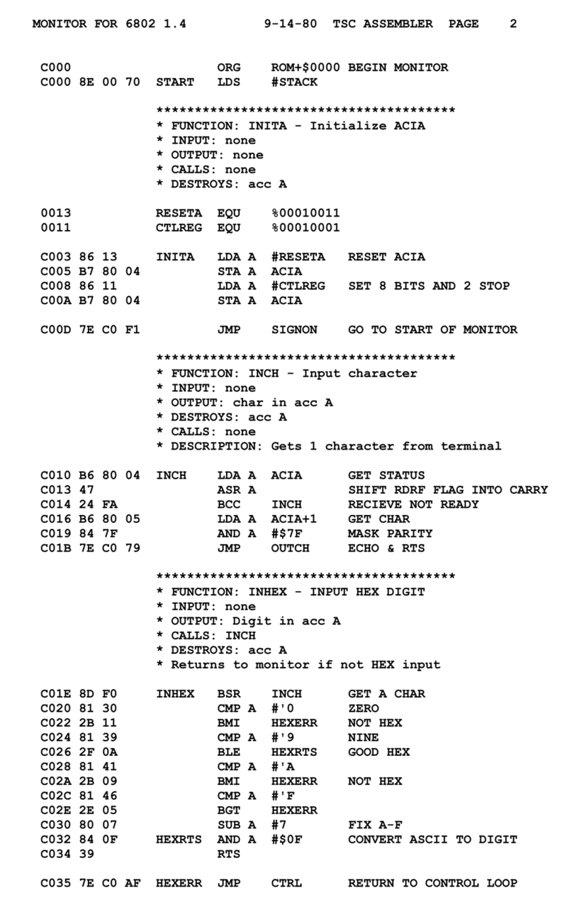

Linguagem Assembly
Assembly é uma linguagem de montagem, utilizada para programar códigos entendidos por dispositivos computacionais. Por ser uma linguagem simples, ela pode fazer com que o programador demore um pouco, entretanto ela possibilita fazer ações complexas cujas linguagens de alto nível, não conseguem realizar.